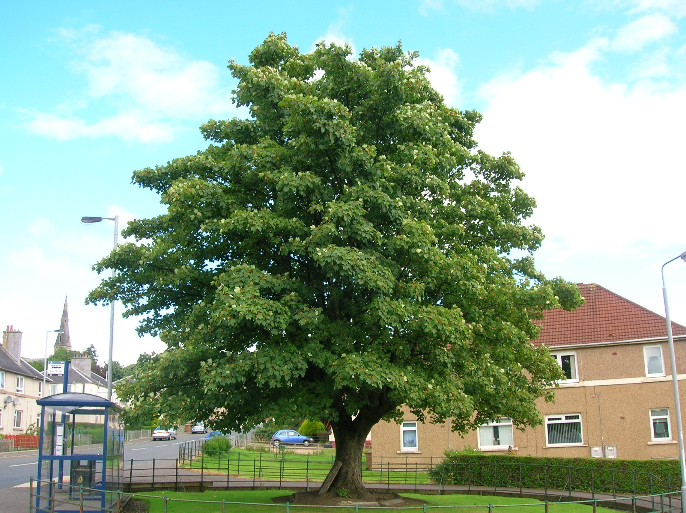

chapter10.2--handout
Background Information
Concierge, porter以及bellboy 有什么区别？
...and as I went out of the building into the street the porter stopped me to brush off my coat.（正走出大楼要上街的时候，看门人拦住了我，给我刷掉外衣上的尘土。）
这里提到的看门人是porter，我们在前面还见到了concierge这个词（Jake居住的公寓门口的门房太太），其实在英文里还有一个意思非常相近的词：bellboy（也可以写作bellpop），门房的英语这么多，它们之间都有什么区别呢？接下来我们一一来看~
Concierge
concierge 来自法语，一说是从古法语的cumcerges演变而来，这个词还可以追溯到中世纪的拉丁文consergius, 在英文里的意思是“fellow slave”, 可以理解为“奴仆”。还有说concierge是comte des cierges的缩写，这个短语的意思是“count of candles”，“数蜡烛的人”，也就是中世纪的时候专门负责维护烛火和清洁的仆人。
现在的concierge不是指哪个工种，而是一个部门（礼宾部），一般在比较大型或高档的酒店才会设置这个部门，为客人提供行李、委托代办等服务，一般由行李生、门僮、机场代表、司机班组成（an employee of a multi-tenant building, such as a hotel or apartment building, who receives guests）.
Porter
porter也叫bearer, 从命名就可以知道它主要是指“行李生”（a person who carries objects or cargoes for others）. porter从拉丁文的portare而来，意思就是“to carry”.
行李生的含义范围非常广，比如火车站负责把行李搬运上火车（to shutter luggage aboard）的就是railroad porter; 还有一种是在山区远足（mountaineering expedition）中负责挑运行李的也是porter（这个有点像我们的“挑山工”）。
Bellboy
bellboy 也称为bellpop，这是北美的说法，国际上一般称作hotel porter. 原意是是指酒店门口摇铃当，侍应客人的人，现在一般指行李生，同时帮助客人登记或登出以及搬运行李（who helps patrons with their luggage while checking in or out）.
bellboy一般都身穿特定的制服，其中最有标志性的就是他们的帽子，就叫作bellboy hat (or cap), 长下面这样↓
Vocabulary
subscribe
vt.& vi. 认购；捐赠；订阅（to pay an amount of money regularly in order to receive or use sth）
原文：I went to the Ayuntamiento and found the old gentleman who subscribes for the bull-fight tickets for me every year...
我赶到市政厅，找到每年给我预订斗牛票的那位老先生……
💧subscribe 一般表示“订购”，可以指订阅杂志或报刊（to subscribe to a magazine or newspaper）, 也可以是某个网站的会员服务（需要定期缴纳会员费）等。这里的subscribe 是指“提前订票”。
lump
n. 肿块；块，团（a piece of sth hard or solid, usually without a particular shape）
vt. & vi. （使）成团、成块；把……混在一起（to unite into a mass）
原文：and lumping all the rest, then I prayed for myself again...
其余的就一股脑儿地放在一起，然后为自己又祈祷了一遍……
💧lump 原义是指“（无定形的）块状物”，比如还没捏成形的一块黏土就可以说是a lump of clay; 这里作动词是“（随意、混乱地）搅和在一起”的意思，也就是Jake把自己想祷告的内容全都混在一起胡乱说一通。
💧关于lump还有一个很生动的俚语表达：to have/with a lump in one's throat，表示“（因为情绪激动而）喉咙哽咽”，比如：I stood there with a lump in my throat and tried to fight back tears.
我站在那儿，喉咙哽咽，拼命忍住眼泪。
Crush Your Problems
1、The first meal in Spain was always a shock with the hors d'oeuvres, an egg course, two meat courses, vegetables, salad, and dessert and fruit.
到西班牙的一顿饭往往使人震惊，有好几碟冷盘小吃 、一道鸡蛋做的菜、两道肉菜、几色蔬菜、一份沙拉，还有点心和水果。
💧知识拓展
course 原义是“进程”，因为西方的饮食习惯是菜一盘一盘地分开上，所以一顿饭吃下来就有好几个courses（一般是五道菜，也就是a five-course meal）, 不像我们是全部上齐了一起吃。
因此每回上的菜就是一道course. 比如第一道（the first course）就是头盘，一般是开胃菜，英文里叫作appetizer，法国人则会说hors d'oeuvres. 第二道是汤；第三道则会是鱼；到了第四道一般就是主菜（the main course）了，法语里叫作entrée; 之后则是沙拉、甜点和水果之类的。
2、"If their money doesn't come it's a cinch they won't get in tonight."
“如果他们的钱没汇到，他们今晚绝对到不了。
💧表达精讲
①cinch 是一个比较口语化的词，一般不用在书面表达里。它可以表示“极容易的事情”（something that is very easy），比如：‘How was the exam?’ ‘Oh, it was a cinch!’（“考试怎么样？”“噢，容易得很！”）
因为指很容易达成，所以也可以引申为“必然发生的事情”（something that will definitely happen），或者“必然会达成某事的人”（someone who will definitely do something）比如： Most observers say the President is a cinch to win re-election.（大多数观察家都说总统必定能够再次当选。）
②get in 表示“到达”（to reach some destination）, 比如：What time does your plane get in? It's a long drive, so we won't get in until after midnight.（你坐的航班几点到？这个航线很长，所以我们得半夜才能到。）
3、"Mike and Brett fixed it up with us about coming down here."
“迈克和勃莱特不是跟我们说好了要到这里来的吗？”
💧表达精讲
fix (up) 本义是“固定，安装”，因此可以引申为“安排”（to fix a time, date or place etc.），并且经常在口语中使用。比如想跟别人约时间的时候就可以说Shall we fix it at...?
如果是替别人安排的话就是fix it for sb to do sth, 比如：I’ve fixed for you to see him this afternoon at four.（我替你安排了今天下午四点同他会面。）
4、I said I would go with him, just to devil him.
我存心戏弄他，就说要陪他一起去。
💧表达精讲
devil 是“恶魔，魔鬼”的意思，在这里作动词表示“戏弄，折磨某人”（to annoy, torment sb）. 其实devil的用法非常广泛，而且不只局限于负面的含义，比如英文里的“说曹操，曹操到”就是：speak/talk of the devil. 比如：Well, speak of the devil — here's Alice now!（嗬，说曹操，曹操就到——瞧，艾丽斯这不来啦！）
以及be a devil这个表达也不是说让一个人去做魔鬼哦~它是用来鼓励对方坚定或者勇敢一点，不要犹豫不决的，比如：Go on, be a devil, buy both of them.（来，怕什么，两个都买了吧！）
Content Analysis
三人到达了潘普洛纳（Pamplona），而Cohn则从巴约讷（Bayonne）一路过来都表现得很紧张，Jake很灵敏地察觉到了这一点，但他并不作理，甚至还想戏弄他——
💧Clue 1: Jake has no sympathy with Cohn's nervousness.
Evidence 1: Cohn had been rather nervous ever since we had met at Bayonne. He did not know whether we knew Brett had been with him at San Sebastian, and it made him rather awkward.
科恩自从巴约讷跟我们会合以来，一直心神不定。他弄不清我们是否知道勃莱特在圣塞瓦斯蒂安曾经和他在一起，此事使他感到尴尬。
Evidence 2: He was nervous, and I did not try to help him any...Robert Cohn got up from the table and said he would go to the station. I said I would go with him, just to devil him.
他很紧张，我也不想宽慰他……罗伯特·科恩从饭桌上站起来，说他要到车站去。我存心戏弄他，说要陪他一起去。
我们在前面提到过，从Jake从Brett那里得知她和Cohn一起去了圣塞巴斯蒂安的时候，他就已经把Cohn看成了潜在的对手（rival）——他们会一起争夺Brett. 但除了危机感，Cohn带给Jake的还有另一种情绪：鄙夷和不屑。我们知道从一开始Jake就不是很喜欢Cohn，Cohn性格懦弱，想法不切实际，甚至看起来是很幼稚的（boyish）. 所以在Jake看到Cohn的不安和紧张时反而心生窃喜。
今天的内容里还有一段非常有意思的描述，Jake在街上晃悠的时候正好又走到了天主教堂门前，于是便索性进去祷告（At the end of the street I saw the cathedral and walked up toward it...I knelt and started to pray and prayed for everybody I thought of）. 这里作者采用了我们之前介绍过的“意识流”的写作手法，看起来似乎毫无逻辑不着边际，而且还是一气呵成的足足有196个词的句子（从I wondered if there was anything else I might pray一直到走出教堂I felt them dry in the sun这中间都没有出现句号哦~）
这其实正好印证了Jake虽然身为天主教徒（Catholic），但其实已经抛弃信仰，并且生活的方式和状态也完全和天主教的教义背道而驰（比如他连专心祷告也没法做到）——
💧Clue 2: Jake can't even focus on praying.
Evidence 1: ...I thought I would like to have some money, so I prayed that I would make a lot of money, and then I started to think how I would make it, and thinking of making money reminded me of the count, and I started wondering about where he was... 想起了我需要点钱，所以我乞求能发一笔大财，接着我开始想该怎样去挣，一想到挣钱，我就联想到伯爵，想到不知道他现在在哪里……
Evidence 2: ...I was a little ashamed, and regretted that I was such a rotten Catholic, but realized there was nothing I could do about it, at least for a while, and maybe never, but that anyway it was a grand religion, and I only wished I felt religious and maybe I would the next time...
我感到有点害臊，为自己是一个糟糕透顶的天主教徒而懊悔，但是意识到我自己对此毫无办法，至少在这一阵，或许永远，不过，怎么说天主教还是种伟大的宗教，但愿我有虔敬之心，或许下次来时我会有的……
这一段也足见作者在长句的把握上非常出色，读起来毫无冗赘和拖沓的感觉，大家可以也可以再细细地品味哦~
Today's Bonus
💧常见的行道树有哪些？
We came into the town on the other side of the plateau, the road slanting up steeply and dustily with shade-trees on both sides...（我们驶进位于高地另一侧的城市，两侧绿树成荫的公路灰尘扑扑地陡然上升……）
这里提到的shade-trees从字面上来看是指“遮阴的树”，并且是种在路旁的，也就是我们所谓的“行道树”啦~ 行道树的栽种既考虑美观，又要能够在夏日提供阴凉，而且还要根据各地的气候选择合适的树种。那么今天的彩蛋我们就来看看常见的行道树有哪些以及它们一般都出现在哪些地区~
1. Ginkgo 银杏
Ginkgo也可以写作Gingko（两个词发音是一样的，都读 /ˈɡɪŋkoʊ/）. Ginkgo来自于对日语里的银杏的误拼：gin kyo. 而“银杏”这个名字最早的来源就是中国的《绍兴本草》。
银杏作为世界五大行道树之一，在各国都饱受喜爱。银杏树高大挺拔，叶似扇形。冠大荫状，具有降温作用。叶形古雅，寿命绵长。它还是公认的无公害树种，可自然净化空气，减少大气层悬浮物含量，提高空气质量。
银杏适应性强，对气候土壤要求都很宽范，所以在我国东西南北大部分省区都有栽培。
在国外，银杏不仅被引种到邻近的日本和朝鲜半岛，也飘洋过海在欧美安家。美国华盛顿白宫门前大草坪的一角，就有一棵大银杏，树干需要四人才能合抱，而且它的岁数比白宫存在的年岁还要大。
2. Linden 椴树
Linden是椴树的其中一个名字，它在英文里还可以称作lime或basswood. 椴树属植物约有80余种，主要分布在欧洲、美洲和中国。原产于欧洲的椴树被统称为欧洲椴，有欧洲小叶椴、欧洲大叶椴、欧椴和银毛椴等诸多品种，这些品种基本都是世界著名景观树种，在欧洲具有极高的知名度。
中国是全世界椴树种类最多的国家，南北均产，共有30余个品种。先秦时期的辽椴就以"杻"字出现在诗经中，唐朝后，椴树又被称为菩提树，成为佛家圣树，明清以后，椴树作为重要的蜜源树种，生产着皇家贡蜜。虽然椴树在中国有很深的文化渊源，却因"椴"与"断"谐音，听起来不吉利而长期进不得庭院。
3. Sycamore 悬铃木
悬铃木是落叶大乔木，是悬铃木属植物的通称，包括一球悬铃木(美国梧桐)、二球悬铃木(英国梧桐)、三球悬铃木(法国梧桐)三种。

悬铃木几乎具有优秀行道树的所有特征。树形高大开展，枝叶繁茂，姿态优美。易繁殖、成活率高、生长迅速，能够迅速成荫。适应性强，不择土壤，具有超强的吸收有害气体、抵抗烟尘、隔离噪音能力。
电影《怦然心动》（Flipped）里面Juli最爱的那棵树就是Sycamore啦！具体的品种就是美国梧桐哦~
4. Horse chestnut 七叶树
七叶树也叫娑罗树，它的树干挺拔耸立，树形美观，叶片浓绿肥大，冠如华盖，夏绿秋红，别具一格，开花时硕大的白色花序又似一盏华丽的烛台，蔚为奇观。是欧美及日本等地常见的行道树和庭荫树以及园景树。
在中国，七叶树与佛教有着很深的渊源，许多古刹名寺都有栽培，如北京卧佛寺、大觉寺中都有千年以上的七叶树。
5. Chinese Tulip Tree 鹅掌楸
掌楸为古老的孑遗植物，曾有有10余种，现仅残存鹅掌揪和北美鹅掌楸两种。北美鹅掌楸于17世纪从北美引种到英国，其黄色花朵形似杯状的郁金香，故欧洲人称之为"郁金香树"，是城市中极佳的行道树。
中国的鹅掌楸叶形如马褂，又叫马褂木，花似郁金香，因此，它的英文名称是"Chinese Tulip Tree"，译成中文就是"中国的郁金香树"。鹅掌楸是中国特有的珍稀植物，国家二级保护植物，因播种出芽率低又屡遭滥伐，在其主要分布区已渐稀少，现已成为濒危树种。